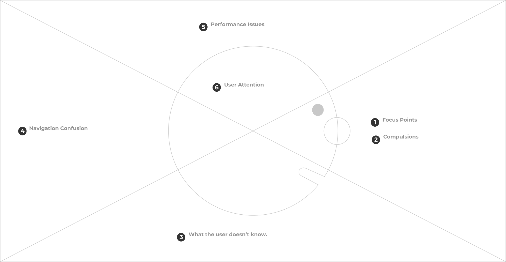
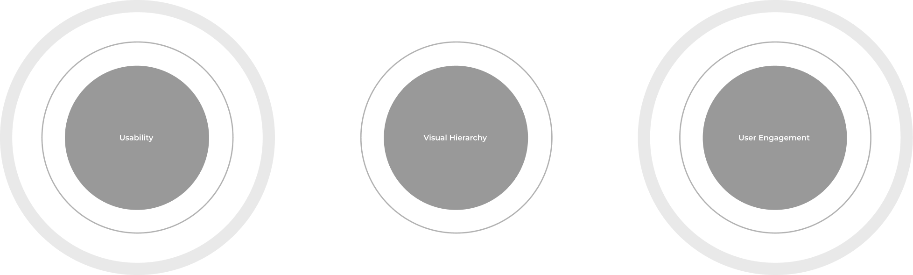
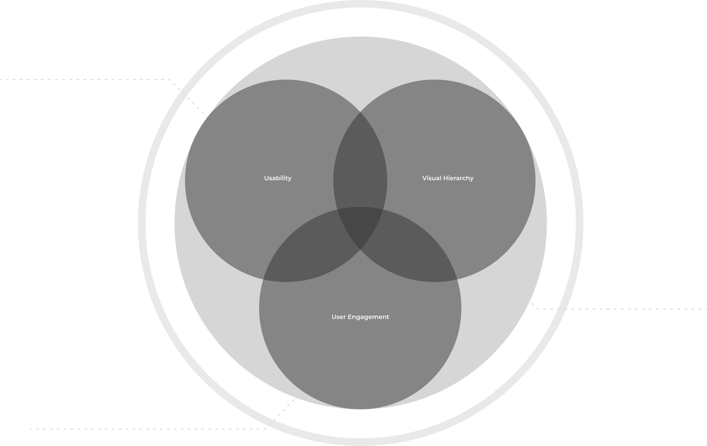
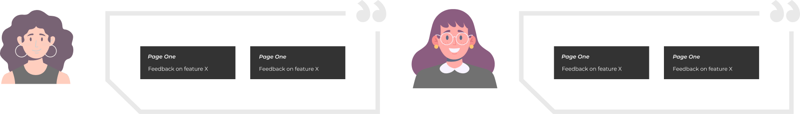
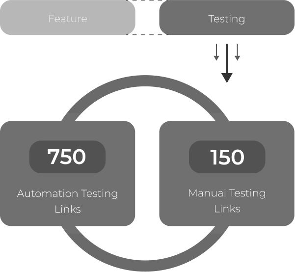

Scaling a Digital Payment Platform in a Regulated Environment
Transforming User Experience While Navigating Complex Technical Constraints
This project focused on evolving an existing education payment platform into a more scalable, user-centric solution while operating within strict regulatory and business constraints. The goal was to improve usability, performance, and delivery predictability without disrupting live customers or core business operations across thousands of client implementations.
As Product Owner, I was responsible for maximizing product value while balancing business objectives, technical constraints, and user needs. I led the end-to-end delivery coordinating cross-functional teams across discovery, design, development, and stakeholder management.
⚠️ Confidentiality Notice: Due to signed non-disclosure agreements, specific company names, exact metrics, proprietary technologies, and internal processes have been anonymized. All details presented accurately reflect the scope, challenges, and outcomes of the project while respecting confidentiality requirements.
📅
4-5
Months
👥
10+
Team Members
🔗
1000s
Client Links
✅
80%
Test Coverage
Tools & Practices
Agile/Scrum
Google Analytics
HotJar Heat Maps
User Surveys
Figma
QA Automation
Regression Testing
Pareto Principle
User Story Mapping
Backlog Refinement
Data-Driven Design
Role & Team
Product Owner - Project Lead
5 Developers
3 QA Engineers + 1 Automation
1 UI/UX Designer
Key Deliverables
Low & High Fidelity Prototypes
QA Automation Suite
Front & Back-end Code
Heat Maps & Analytics
Technologies
Google Analytics
HotJar
Figma
Test Automation
Project Duration
September 2023 - January 2024
4-5 Months
Analysis + Development
Problem Statement
The Challenge
The product faced several challenges that limited its ability to scale and deliver value effectively.
The platform offered both APIs and standalone web-based payment solutions to thousands of clients globally. Over the years, this led to a complex web of client-specific customizations that made any global changes extremely risky. The design language was outdated, the user experience was fragmented, and the overall structure created confusion and poor navigation.
The main challenge was finding the best approach with the least amount of effort, risk impact, and time investment while modernizing a system that had accumulated years of technical debt and customizations.
Conflicting Customizations
Major changes to payment links were difficult to execute as numerous customizations had been added over years per client request. Global changes had the potential to impact each client's link differently and create bugs. The volume of customizations made developing unified solutions extremely challenging.
Unified Development Approach
Finding a unified approach for both UI/UX and development perspectives was one of the hardest aspects. Changes to existing UI or elements touched on logic that could create issues across different client implementations. UI/UX designers and engineers had to work closely to maximize impact with minimal resistance.
Quality Assurance Complexity
Ensuring high quality was challenging due to customization complexity and interdependencies. Every change required extensive testing to verify it didn't introduce unexpected bugs across different client implementations. A robust testing process was necessary, including regression testing, automation, and continuous feedback loops.
Logic Modifications
Altering core logic was complex as layers of conditional logic had accumulated to accommodate different client needs and edge cases. Changes in one area could have unexpected repercussions elsewhere, making updates riskier and more time-consuming. Any modification required careful analysis to prevent disruptions.
Client Approval Processes
The system was heavily customized for individual clients, requiring careful approval processes for updates. Different requirements meant even minor changes could impact workflows. A structured approval pipeline ensured stakeholders reviewed and tested updates before deployment, balancing innovation with stability.
Technical Debt
Years of accumulated technical decisions and quick fixes had created a system where the intricate nature of logic and UI components made any change potentially risky. Managing this debt while delivering new features required strategic prioritization and careful change management.
User Pain Points
Understanding User Problems
The re-design addressed large pain points that users were facing, including fragmented user experience and limited insight into user needs.
Scattered User Attention
Unorganized elements throughout pages directed user attention to non-important areas rather than key ones, creating poor user experience. The lack of visual hierarchy and information architecture made it difficult for users to complete their payment tasks efficiently.
Outdated Design Language
The design language was outdated and didn't cover fundamental principles and rules for modern web-based development. This resulted in an interface that felt dated and untrustworthy, impacting user confidence in completing financial transactions.
Style Guide Misalignments
The design lacked cohesive visual identity with inconsistent fonts, colors, and UI components across sections. This inconsistency caused confusion and reduced trust in the platform. A unified design system was needed to ensure brand consistency and a polished user experience.
Misleading User Journey
Users weren't fully informed of key details throughout the user flow, leading to excessive account creation and a larger need for customer support. The lack of clear communication and progressive disclosure created frustration and abandonment.
Inconsistent Device Performance
The design wasn't optimized for various screen sizes and devices, leading to inconsistent performance on mobile and tablet platforms. This resulted in poor user experience with slower load times and unresponsive elements, making it difficult to interact effectively across devices.
Limited Feature Impact Insight
There was limited visibility into which features were actually being used and which were causing friction. This made it difficult to prioritize improvements and measure the impact of changes, leading to decisions based on assumptions rather than data.

My Role & Responsibilities
What I Did
As Product Owner, I was responsible for maximizing product value while balancing business objectives, technical constraints, and user needs.
Product Discovery & Alignment
Collaborated with stakeholders to define a shared product vision and success criteria. Mapped user journeys to identify pain points and opportunities. Worked with UX to validate assumptions through heat maps, analytics, and user surveys. Introduced clearer acceptance criteria to reduce ambiguity and rework.
Backlog & Delivery Management
Re-structured the backlog around user outcomes rather than feature lists. Introduced prioritization frameworks using the Pareto principle to improve focus and transparency. Balanced short-term delivery needs with longer-term platform improvements while proactively managing dependencies and delivery risks.
Stakeholder & Team Collaboration
Acted as the bridge between business, technical teams, and clients. Communicated progress and trade-offs clearly and transparently. Fostered a collaborative, outcome-focused delivery culture. Led sprint planning, reviews, and backlog refinement sessions ensuring all team members were aligned.
Data-Driven Decision Making
Prioritized work using data from Google Analytics, HotJar heat maps, and user feedback. Ensured solution propositions were backed by analytics and statistics before committing development resources. Used insights to identify key elements creating clutter and problematic user experiences.
The Process
How We Approached It
A systematic, data-driven approach to modernizing a complex legacy system.
Step One: Taking in Metrics
Prior to looking for solutions, we ensured our proposition was backed by analytics and statistics. We analyzed heat maps to understand how users interacted with our product and reviewed statistical data using Google Analytics.
Based on results, we identified key elements creating clutter, confusion, and problematic user experiences, as well as elements that were most focused on. From our research, we distilled the three most important factors and used them to create a balanced and intuitive design language.


Step Two: User Feedback
Through customer support teams and employed surveys, we gathered quantitative and detailed user feedback. After gathering feedback, we spotted consistent patterns of dissatisfaction and made it a priority to listen closely and respond directly to user needs.

To gather user feedback, we implemented feedback forms presented to users just before completing their payment process. In parallel, our customer support team actively collected insights by asking users for general feedback during support interactions.
Step Three: Competitor Analysis
We conducted thorough competitor analysis, reviewing similar platforms across the industry to identify best practices, usability patterns, and areas where competitors offered stronger user experience. We focused on layout design, user flows, feature sets, and overall user engagement. These insights helped us benchmark our product and identify key opportunities for differentiation and improvement.
The Solution
Design Process and Implementation
After analyzing data, we began the development process with careful planning and tight team alignment.
Internal Alignment
At development kickoff, tight alignment between QA and developers was crucial given the features, pages, and numerous links to be tested. The QA team used automations to optimize the testing phase, working hand-in-hand with development.
All re-designed pages went directly into manual testing for features and automation testing to review how they handled across thousands of links created.
Ideally, our goal was to achieve 100% coverage across all payment portal links. However, due to high volume of client-specific portals, we adopted the Pareto principle (80/20 rule) to prioritize testing efforts, focusing on frequently used and business-critical portals.

Exception Handling
It was critically important to understand how changes impacted customizations and exceptions. Through manual work, we compiled a descriptive list taken into account by the QA team, ensuring we had visibility into variations across client implementations.
Client Alignment
Unable to map all exceptions and customizations, we requested direct client feedback. We sent a global ask to all clients to review and monitor their platforms after Go Live, ensuring rapid issue identification and resolution.
Outcomes & Impact
Results Delivered
While specific metrics cannot be disclosed, the project delivered measurable improvements.
Predictable Delivery
Achieved more predictable delivery and improved sprint outcomes through better planning, prioritization, and risk management. The structured approach reduced surprises and allowed for better resource allocation.
Reduced Rework
Significantly reduced rework through clearer requirements and earlier alignment between design, development, and QA. The investment in discovery and planning paid dividends in reduced defects and faster delivery.
Improved User Experience
Delivered improved user experience across core workflows with modernized design language, clearer user journeys, and better performance across devices. User feedback indicated increased satisfaction and reduced support needs.
Scalable Foundation
Established a scalable product foundation to support future growth. The improved architecture and processes make it easier to implement changes and roll out new features without impacting existing client customizations.
Key Learnings
What I Learned
Critical insights from navigating complex system modernization in a regulated environment.
- Clear problem framing often delivers more value than detailed solutions upfront - Investing time in truly understanding the problem space prevented wasted effort on wrong solutions.
- Early discovery significantly reduces delivery risk - The upfront investment in analytics, user research, and competitor analysis paid massive dividends in avoiding costly mistakes.
- Transparent prioritization builds trust, even when saying "no" - Being clear about why certain things weren't prioritized helped manage stakeholder expectations and build credibility.
- Strong collaboration between product, design, and engineering accelerates outcomes - Breaking down silos and fostering continuous communication was essential to success.
- Data-informed decisions are essential in regulated environments - Having concrete data to back decisions helped navigate complex compliance and business constraints.
- Change management is as important as technical delivery - Managing client expectations and coordinating approvals was as critical as the technical work itself.
Why This Project Matters
Strategic Importance
This case study highlights my approach as a Product Owner: outcome-driven, collaborative, and pragmatic, with a focus on delivering value while navigating real-world constraints.
It demonstrates the ability to lead complex platform modernization efforts in regulated environments where technical debt, customizations, and stakeholder management present significant challenges. The project showcases strategic thinking, user-centricity, and the ability to balance innovation with stability in delivering measurable business value.